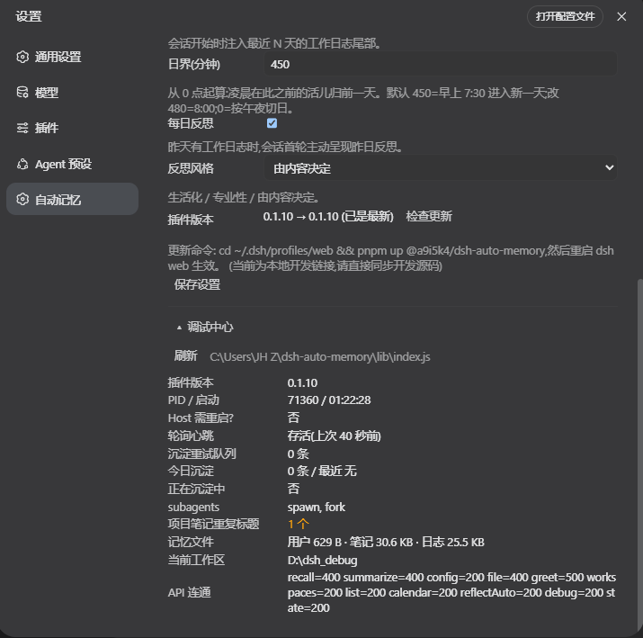
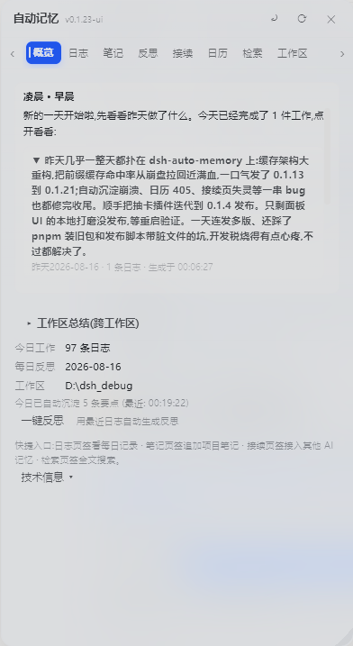
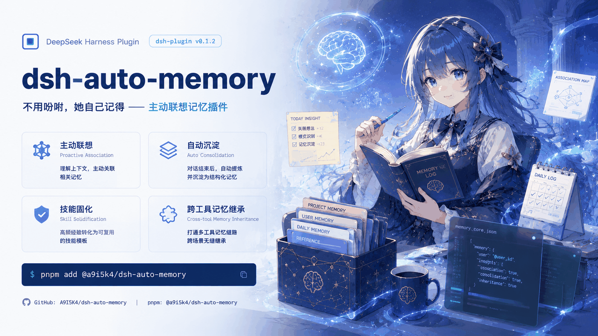

无问自忆
记忆不断线
她不是数据库，是一个会主动想起你的同事。跨窗口、跨会话、跨工具 —— 记忆长在你自己的机器上。
宿主侧主动联想中间件：持续观察对话情境，双轨检索，在你开口之前把该想起的送进下一拍。零运行时依赖，BSD-3-Clause。
市面上的记忆方案，
都要求模型「记得去查」。
忘了调，记忆就等于不存在 —— 这是所有「工具式记忆」的结构性缺陷。dsh-auto-memory 换了一条路：把记忆放在宿主侧，让她持续观察、主动联想、在模型开口之前把该想起的送进下一拍。JS 权威层做最终仲裁，AI 只在边界内干活。
主动，不靠调用
语义模型在对话中途判断两件事：此刻该不该想起、该想起哪一条。相关记忆经固定边界注入下一轮 —— 从不依赖模型「记得去查」。
记忆是你自己的
全部写在本机磁盘，每条都带证据链：哪条消息、哪个工具、哪次深夜反思。可审计、可编辑、可删除 —— 一句话就能让她忘。
前缀缓存友好
注入点在提示词里的字节位置固定不变，缓存持续命中 —— 你不需要为「记忆」付两次 token 的钱。这是设计约束，不是事后优化。
两套可互换的语义引擎
JS 端内置 e5-small（~130MB，装上就能用）与 Python 端 BGE-M3（563MB，发烧友进阶档）—— 两者相对独立、可互相替换，永远不互相绑架。
四件心血撑起脊柱，
其余八件围着长。
会记事会问候 / 涌现式主动联想 / 技能固化 / 上下文交接 —— 每一件都可独立开关，每一次想起都交得出证据。
主动联想
不是「记得去查」，是边做边想起。宿主持续观察，语义模型实时判定，记忆经固定边界走进下一拍。
三级检索算力
词法 0GB 保底（永远可用）→ 内置 e5-small ~130MB → Python BGE-M3 int8 进阶。失败自动逐级回退。
技能固化
像骑自行车 —— 不用再想怎么骑。工作流凝成技能，下次相似场景清单自己挂上来，无人提醒。
交接而非压缩
上下文满了不烧整本书换一句话，而是写四段式交接账本：状态、目标、死路与原因、进度与下一步。
外部记忆继承
WorkBuddy / CodeBuddy / Claude Code / Codex 的记忆会被扫描进来 —— 换工具不用换记忆。纯链接模式，不抄内容。
定时问候
早上、下午、深夜 —— 你回来时她用合适的语气打招呼。不是通知铃，是记得你的人说的话。
无人值守
整夜安静跑：零寒暄、零打扰、零汇报。只在该想起时想起，该交接时交接。早上回来，工作已经往前走了。
会话隔离
同时开几个工作区，各记各的、各想各的。点进一个绝不打扰正在跑的那个 —— 并发 A/B 的 cwd、游标、待办零串线。
激活观测台
每一次 suppress / prefetch / activate / drop / delivery 都可查：触发上下文、车道、分数、候选 id、尾注摘要。决策可打分复核。
记忆中枢
三店持久化 + 治理式写回：事实层、程序层、日志层分开管，每条都能追溯来源、置顶保活、按需遗忘。
欢迎向导
每个功能、当场看懂、当场开关。十二个能力逐个演示，升级后自动播放一次 —— 不是弹窗广告，是开关的家。
零运行时依赖
JS 记忆核心只用 Node 内置模块。装完即用，不拖一个第三方包进你的进程 —— BSD-3-Clause，代码全在你自己机器上。
三件事，
现在就能试。
召回、决策、固化 —— 这是她每轮对话都在做的三件事。参数与数字取自真实实测（BGE-M3 int8 · R@5 0.925 · canary delivered=3/seen=24）。
她说一句话，她开始回想
输入任意一句对话，看她如何从三层语料里捞出候选、打分、挑出唯一该注入的那条。分数是真实的双轨融合结果（词法 0.3 + 向量 0.7）。
该不该打断你？
召回之后还有一道闸：分数够不够、会不会是回声、要不要打断。调阈值看两车道如何分流 —— canary 显式唤起，shadow 只记录不注入。
从看到到会做
看过你几次纠正、同类事做过几遍，工作流就凝成技能。四级晋升，每一步都有跨会话证据；90 天未用自动归档，可置顶保活。
语义层决定想起什么，
权威层决定是否注入。
JS 记忆核心持有全部权威：身份、范围、版本、TTL、预算、风险。Python 语义侧车只负责「像不像」，它不创建证据，也不直接注入 —— 这是整套架构最硬的一条边界。
激活收件箱 · 投递闭环
activation-inbox-pre.js硬校验 → offer → claim → 参考尾注渲染 → delivered/seen 证据落盘。每次投递都留下可回查的痕迹。
授权上下文 + 证据桥
envelope · evidence-store信封授权范围校验、coverage 检查、cite/correction 证据、stale 拒绝。只用 Null/Fake sink，从不启动 Python。
语料快照 + 影子检索
lexical_pre_v2 · BM25六原因 fail-closed 快照、冻结的策略权重与滞回、CJK 2-gram + 507 停用词的 BM25。候选只审计，绝不注入。
锚定与迁移
anchors · sidecar · migration冲突 fail-closed、确定性迁移计划、原子写。31 个真实文件 / 176 条记录完成迁移，备份可回滚。
事件账本 + 分型切片
EventEnvelope · Segmentuser / tool_call / tool_result / assistant 分型，稳定原生坐标生成 id 与 digest。关闭态零留存，敏感内容零残留。
会话隔离
runtime-store · ALS每会话独立的锁、冷却、队列。并发两个工作区的 cwd、segment、游标、待办互不串线。
Python 语义侧车 · 可选 · 懒启动
BGE-M3 int8 · ONNX563MB 进阶档，设置页一键安装。R@5 0.925（与 fp32 差 0.000，快 6×）。它与 JS 内置档是两套可互换的引擎 —— 互不联动、互不依赖。
两步装好，
向导自己走出来。
Windows / macOS / Linux 全平台。装完重启 DSH，欢迎向导自动播放：十二个能力逐个演示、逐个开关。
1 · 安装插件
在 DSH profile 目录里装包：
# 进入 DSH profile 并安装 cd ~/.dsh/profiles/web pnpm add @a9i5k4/dsh-auto-memory
2 · 重启 DSH
重启 dsh web 后欢迎向导自动走出。已有用户升级后自动播放一次：
# 或直接升级到最新 cd ~/.dsh/profiles/web pnpm up @a9i5k4/dsh-auto-memory
（推荐）给 AI 一段提示词
把下面这段贴给你的 AI，她会自己读懂怎么用这个插件：
你的工作区装有 dsh-auto-memory。每轮结束会自动评估沉淀；要跨窗口接续时，先读白板 PLAN.md 与最近交接账本，再开工。需要找过去的决定/做法时，用 memory_recall 检索，不要凭空猜测。
从 v0.1.30
到 v3.1.4。
七个版本条目，每一步都留下了可回查的 CHANGELOG 与守卫断言。
当前版本 · 记忆中枢治理
三店持久化 + 治理式写回 + 迁移搬包三步向导。全量回归 173/173 绿，tarball 256 文件 / 17.7MB。
Fable 大版本 · 技能固化
技能四级晋升、90 天归档、激活观测台、无人值守模式 —— 从「记事本」长成「同事」。
欢迎向导 + 双语义引擎
每个功能、当场看懂、当场开关；所有用户升级后自动播放一次。JS 与 Python 两套语义引擎解耦成可互换形态。
她学会了记事与问候
最早的两个能力：每轮结束自己记下值得留的；你隔一段时间回来，她按时段用合适的语气打招呼。人格从这里定下。
存储治理（M10）
删除级联撤销、语料健康扫描、管理界面。底座（原子事务 / 保留策略 / 30 天蒸馏）已就绪。
七张实机截图，
不是示意图。
面板 / 设置 / 记忆中枢 / 激活观测台 / 欢迎向导 / 无人值守 / 外部继承 —— 全部来自实机。









它在这条线上的
位置。
| 能力 | 工具式记忆 需要在提示里调用 |
内置上下文 厂商实验特性 |
dsh-auto-memory 宿主中间件 |
|---|---|---|---|
| 不需模型主动调用 | — | ~ | ✓ |
| 跨窗口 / 跨会话 | ✓ | ✓ | ✓ |
| 跨工具记忆继承 | — | — | ✓ |
| 前缀缓存字节稳定 | ~ | — | ✓ |
| 零运行时依赖 | ~ | ✓ | ✓ |
| 每次召回带证据链 | — | — | ✓ |
| 技能固化（程序性记忆） | — | — | ✓ |
| 三级算力可切换 | ~ | — | ✓ |
| 记忆全在本机磁盘 | ✓ | — | ✓ |
| 开源可审计 | ~ | — | ✓ |
你大概想问
这些。
她会偷我东西吗？数据存在哪？
全部写在你自己机器的磁盘上：用户级记忆在 ~/.dsh/memory/MEMORY.md，项目记忆与日记在工作区的 .dsh-memory/ 下。没有云端、没有账号、没有遥测。可审计、可编辑、可删除。
不装语义模型能用吗？
能。词法档 0GB 永远可用（BM25 + CJK 2-gram），装完即用。内置 e5-small ~130MB 会在首启自动下载，检索质量更高。Python BGE-M3 563MB 是进阶档，设置页一键装。
「主动」会不会很吵、一直打断我？
不会。召回之后还有一道闸：分数阈值、回声否决、连贯性检查、硬门禁。默认策略偏保守，宁可少说话。canary 车道才显式唤起，shadow 车道只记录不注入。实测 canary 一跑下来 delivered=3 / seen=24。
会不会拖慢我的对话？多花 token？
注入点在提示词里的字节位置固定不变，前缀缓存持续命中 —— 不会为记忆付两次钱。词法档查询往返在毫秒级；内置向量档实测 3.8ms/次。检索在主流程之外，不阻塞你。
她记错了怎么办？
每条记忆都带证据链：哪条消息、哪个工具、哪次反思。激活观测台可以逐次复核打分（A/P/S/H/E），不满意的可以直接删，或者改 policy 让它下次别这么判断。
JS 语义档和 Python 语义档要同时装吗？
不需要，它们是两套相对独立、可互相替换的引擎。默认形态就是 JS 内置档（普通用户装的就是它）；Python 档是发烧友主动在设置里安装的进阶项。开一个不会顺带开另一个，一个不在也不影响另一个。
能接我其他 AI 的记忆吗？
能。WorkBuddy / CodeBuddy / Claude Code / Codex 的记忆会被扫描进来，按来源分组管理、可逐源启停。采用纯链接模式接入：只存路径指针，不抄内容 —— 对方内容变了不会过期。
开源协议与贡献方式？
BSD-3-Clause，代码与文档全部公开在 GitHub。提 issue、交 PR 都欢迎；下一个里程碑是 M10 存储治理（删除级联撤销 + 语料健康扫描 + 管理界面）。